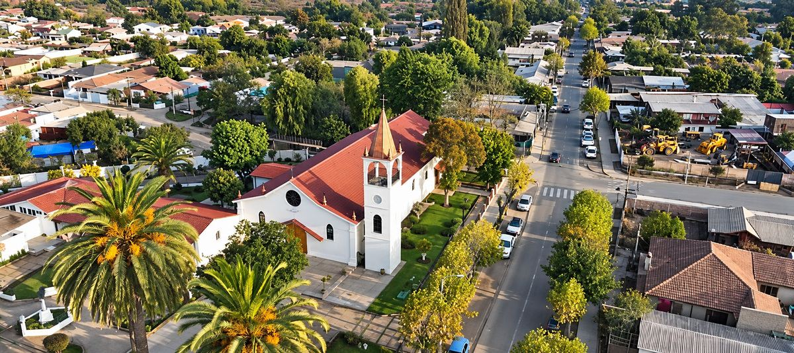
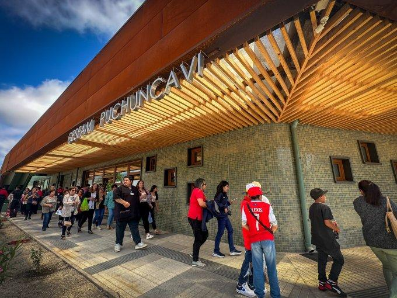
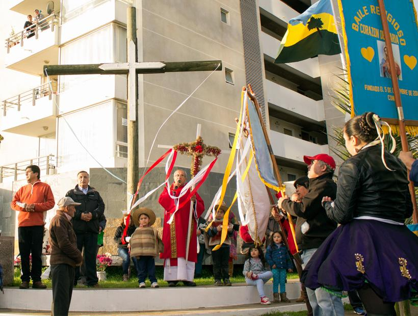
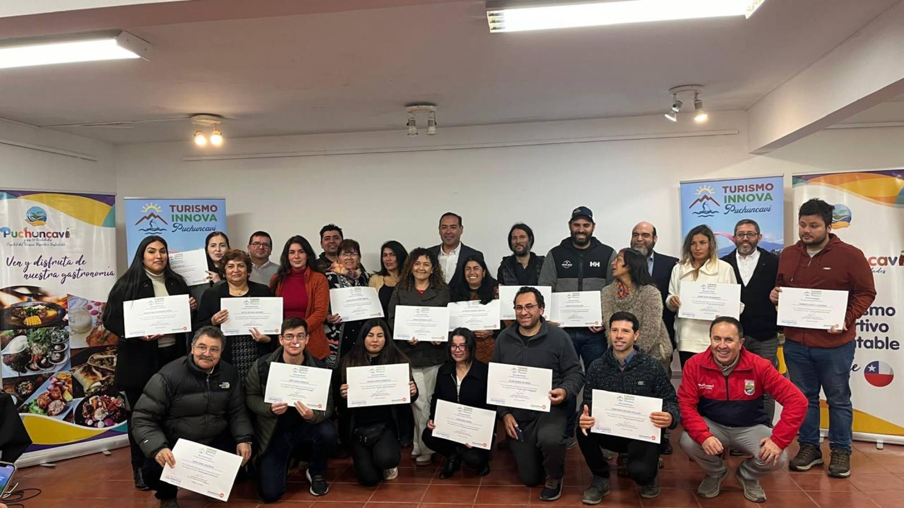

Ilustre Municipalidad de Puchuncaví
Donde el campo se junta con el mar.
Noticias, trámites e información de la Municipalidad de Puchuncaví.

Ilustre Municipalidad de Puchuncaví
Noticias, trámites e información de la Municipalidad de Puchuncaví.

Salud comunal
El Concejo Municipal aprobó la adjudicación de dos nuevas ambulancias para fortalecer la atención de emergencias en la comuna.
Ver informaciónDeporte y comunidad
La segunda edición del circuito reunió a ciclistas de distintas comunas en una jornada deportiva y familiar.
Leer noticia
Cultura y patrimonio
La comunidad celebró esta tradicional festividad junto a bailes religiosos, familias y visitantes, poniendo en valor su patrimonio cultural.
Leer noticia
Desarrollo económico local
Emprendedores de la comuna participaron en una jornada para conocer herramientas y oportunidades de apoyo a sus negocios.
Leer noticiaActualidad comunal
Cargando publicaciones municipales...
Información y servicios
Accede a información municipal, documentos, programas, beneficios, trámites y servicios de interés para los habitantes de la comuna.
Informe de gestión
Consulta la información sobre la gestión municipal correspondiente al año 2025.
Consultar informaciónPermiso de circulación
Accede a la información municipal relacionada con el permiso de circulación correspondiente a 2026.
Consultar trámiteBeca municipal
Consulta el documento publicado con los resultados de la Beca Municipal correspondiente a 2026.
Ver resultadosSecretaría Municipal
Consulta información relacionada con las organizaciones comunitarias y la normativa indicada.
Consultar informaciónBeca municipal
Accede al apartado municipal correspondiente al proceso de postulación a la Beca Municipal 2026.
Ver informaciónSeguridad Pública
Consulta el documento del plan comunal de seguridad pública para el periodo 2026–2030.
Ver documentoPrograma Mujeres Jefas de Hogar
Accede al formulario de inscripción del Programa Mujeres Jefas de Hogar.
Ir al formularioParticipación ciudadana
Consulta el apartado sobre la conformación del Consejo Comunal de Organizaciones de la Sociedad Civil.
Consultar COSOCCambio climático
Consulta la planificación comunal relacionada con el cambio climático y las acciones propuestas para el territorio.
Ver plan comunalBecas deportivas 2025
Accede a la información municipal sobre el proceso de postulación a las becas deportivas del año 2025.
Consultar postulaciónFONDEVE 2025
Consulta la información sobre las postulaciones al Fondo de Desarrollo Vecinal correspondiente a 2025.
Ver informaciónSubvención Municipal 2025
Accede al apartado con información sobre las postulaciones a subvenciones municipales de 2025.
Ver postulaciónRendiciones 2025
Consulta información para la rendición de fondos y subvenciones municipales correspondientes a 2025.
Consultar rendicionesSecretaría Comunal de Planificación
Accede al sitio dedicado a la actualización del Plan de Desarrollo Comunal de Puchuncaví.
Ver PLADECODirección de Obras Municipales
Consulta el apartado municipal relacionado con los permisos de publicidad gestionados por la DOM.
Consultar permisosSeguridad Pública
Accede a la información de la unidad municipal relacionada con la gestión del riesgo de desastres.
Ver informaciónEnergía y territorio
Consulta la información de la Estrategia Energética Local desarrollada para la comuna.
Consultar estrategiaReavalúo 2025
Accede al apartado municipal con información correspondiente al proceso de reavalúo.
Consultar informaciónDirección de Obras Municipales
Consulta trámites, solicitudes y gestiones vinculadas a la Dirección de Obras Municipales.
Ver trámitesMedioambiente
Consulta las respuestas publicadas en relación con la ordenanza de humedales urbanos.
Ver respuestasDerechos de aseo
Accede a la plataforma habilitada para consultar y realizar el pago de derechos de aseo.
Ir al pagoPensión Garantizada Universal
Consulta información sobre la Pensión Garantizada Universal y sus condiciones en ChileAtiende.
Consultar beneficioConcursos Públicos
Accede al apartado municipal dedicado a la publicación de concursos públicos.
Ver concursosOficina Municipal de Intermediación Laboral
Consulta las ofertas de trabajo y oportunidades de capacitación difundidas mediante la OMIL.
Ver oportunidadesContacto municipal
Consulta el directorio de números telefónicos municipales y otros contactos de interés.
Ver directorioCanal municipal